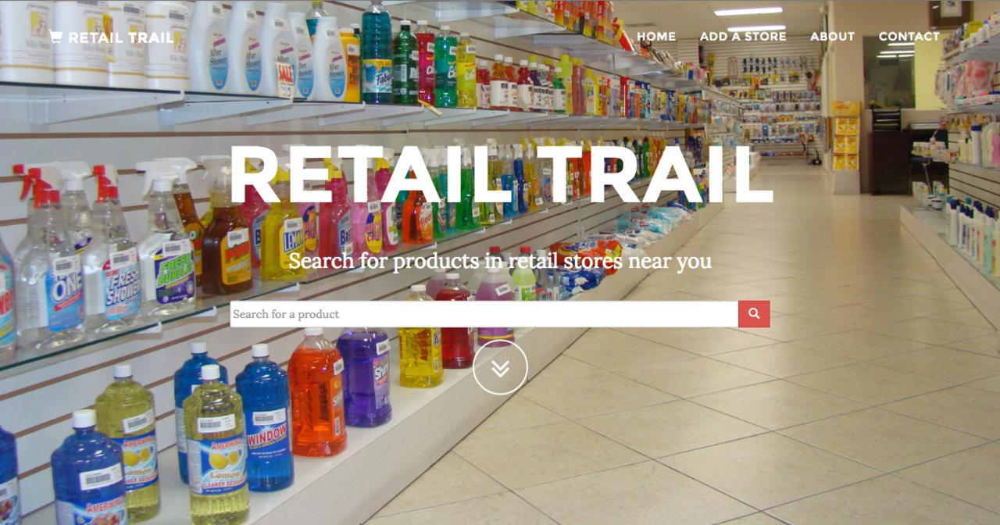

<div id="portfolio-page" class="portfolio-page-content">
    <div class="container">
        <div class="portfolio-nav">
            <div id="portfolio-close-button" class="portfolio-close-button">
                <a href="#portfolio"><i class="fa fa-close"></i></a>
            </div>
        </div>

        <div class="portfolio-title">
            <h1>Retail Trail</h1>
        </div>

        <div class="row">
            <div class="col-sm-7 col-md-7 portfolio-block">
                <div class="owl-carousel portfolio-page-carousel">
                    <div class="item">
                        
                    </div>
                </div>

                <script type="text/javascript">
                    jQuery(document).ready(function($){
                        $('.portfolio-page-carousel').owlCarousel({
                            smartSpeed:1200,
                            items: 1,
                            loop: true,
                            dots: true,
                            nav: true,
                            navText: false,
                            margin: 10
                        });
                    }); 
                </script>
            </div>

            <div class="col-sm-5 col-md-5 portfolio-block">
                <!-- Project Description -->
                <div class="block-title">
                    <h3>Description</h3>
                </div>
                <ul class="project-general-info">
                    <!--<li><p><i class="fa fa-globe"></i> <a href="http://www.retailtrail.herokuapp.com" target="_blank">RetailTrail.com (dead now)</a></p></li>-->
                    <li><p><i class="fa fa-calendar"></i>Early 2017</p></li>
                </ul>

                <p class="text-justify">Retail Trail was a website that informed customers of what items were in retail
                stores near them. The value hypothesis was that customers wanted a way to avoid having to guess if retail
                stores have the item they desire. The second part of the hypothesis was that retail stores would go through
                the struggle of listing their items so they would be visible in search results on my site.</p>
                <!-- /Project Description -->

                <!-- User & Market Research -->
                <div class="block-title">
                    <h3>User & Market Research</h3>
                </div>
                <p class="text-justify">I talked to 11 individuals to validate the customer side of my hypothesis. We
                    found that, prior to shipping, half of the time people had a generic category of product to buy and the other half they
                    had a specific product in mind. This substantiated the need for my product. <br />To validate second half of my hypothesis, I traveled from store to store asking
                them about the technical feasibility of listing their items on the platform assuming for the sake or
                argument that I had 10,000 daily users in their area. I found that they were often reluctant to go through
                the tedious process of listing their products.</p>
                <!-- /User & Market Research-->

                <!-- Execution & Methodology -->
                <div class="block-title">
                    <h3>Execution & Methodology</h3>
                </div>
                <p class="text-justify">After hearing in customer interviews about the difficulty of shop owners to
                list their items online, I decided that there was not a large enough need and value-add on the retail
                    owner side, so my efforts would best be spent on a problem that solves a larger problem.
                </p>
                <!-- /Execution & Methodology-->

                <!-- Outcome -->
                <div class="block-title">
                    <h3>Outcome</h3>
                </div>
                <p class="text-justify">I saved ourselves hours that would have been spent building a site that would
                not have been used, all through the use of customer interviews.</p>
                <!-- /Outcome-->

                <!-- Lessons -->
                <div class="block-title">
                    <h3>Lessons</h3>
                </div>
                <p class="text-justify">Talking to customers beforehand was a crucial step that revealed problems that
                I had assumed would not be problems. Most of the value in this platform would have came from having
                businesses on board, so it was a good idea to stay away once I discovered that businesses were not on board
                at all.</p>
                <!-- /Lessons-->

            </div>
        </div>
    </div>
</div>
